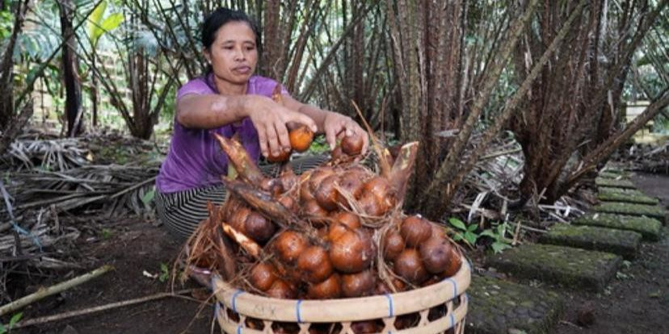
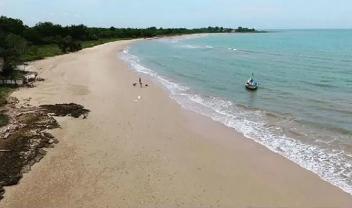
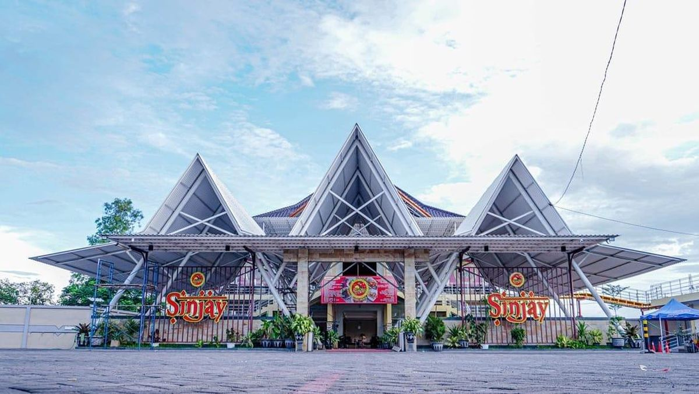
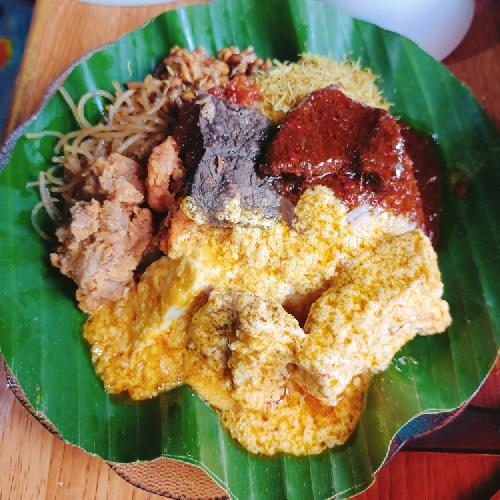
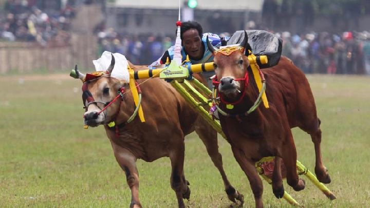
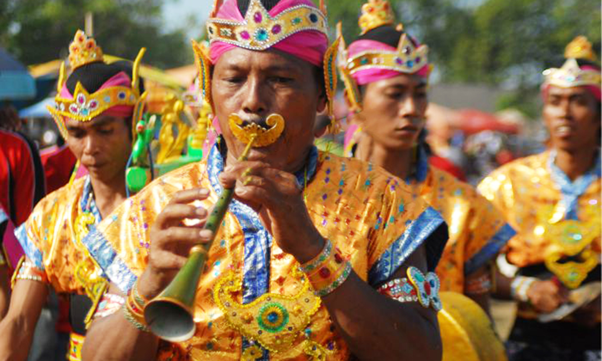

Explore Kabupaten Bangkalan
Kenali lebih dekat “Kota Salak” — Madura Barat yang penuh pesona
Pengenalan Kota Salak
Bangkalan adalah kabupaten di ujung barat Pulau Madura, Jawa Timur. yang Dijuluki sebagai “Kota Salak” karena memiliki kawasan penghasil buah salak terluas dan terbaik di Madura, terutama Salak Madura yang manis-asam dan sangat khas.

Sejarah Singkat Bangkalan
Bangkalan pernah menjadi pusat kerajaan pada masa Cakraningrat (abad ke-17–18). Kerajaan ini memiliki hubungan erat dengan Mataram dan VOC Belanda. Setelah kemerdekaan, Bangkalan terus berkembang menjadi kabupaten modern dengan budaya Madura yang masih sangat kental.

Jembatan Suramadu
Ikon Bangkalan sekaligus jembatan terpanjang di Indonesia (5,4 km) yang menghubungkan Pulau Madura dengan Surabaya sejak 2009. Jembatan ini menjadi simbol kemajuan dan mempercepat pertumbuhan ekonomi Madura.

Bukit Jaddih
Bekas tambang kapur yang disulap menjadi wisata hits. Ada tebing putih tinggi, kolam biru jernih, dan spot foto instagramable yang selalu ramai dikunjungi anak muda.

Pantai Siring Kemuning
adalah Pantai dengan pasir putih lembut, halus dan ombak tenang. Cocok untuk piknik keluarga sambil menikmati sunset Madura yang sangat indah.
Bebek Sinjay
Kuliner legendaris Bangkalan! Bebek goreng empuk, gurih dengan sambal pencit khas Madura yang pedas menggigit. Wajib coba kalau ke Bangkalan!
Kuliner Khas Bangkalan
Selain Bebek Sinjay, Bangkalan punya banyak makanan khas salah satunya Ada, Nasi Serpang – Nasi campur dengan berbagai lauk & kerupuk rambak khas Madura. makanan ini sangat banyak diminati. Nasi ini yang pastinya nikmat.
Karapan Sapi
Kerapan Sapi Bangkalan adalah tradisi pacuan sapi tahunan khas Madura yang digelar di Kabupaten Bangkalan. Lebih dari lomba, ini simbol kebanggaan budaya, ajang silaturahmi, serta memiliki nilai ekonomi dan sosial tinggi. 🐂
Musik Saronen
(Klik card ini untuk mendengarkan musik!)
Musik tradisional Madura dengan alat tiup seruling khas. Sering dimainkan pada acara adat, pernikahan, khitanan, dan karapan sapi.
